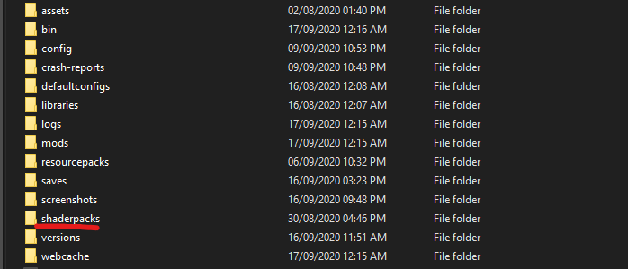
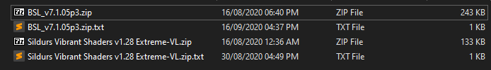
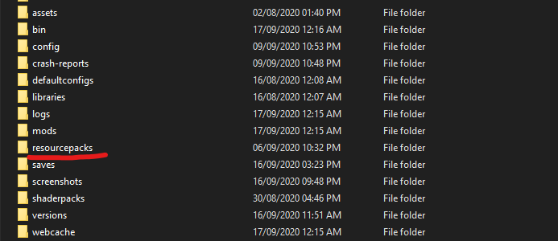
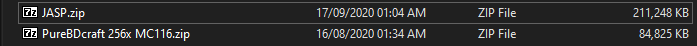
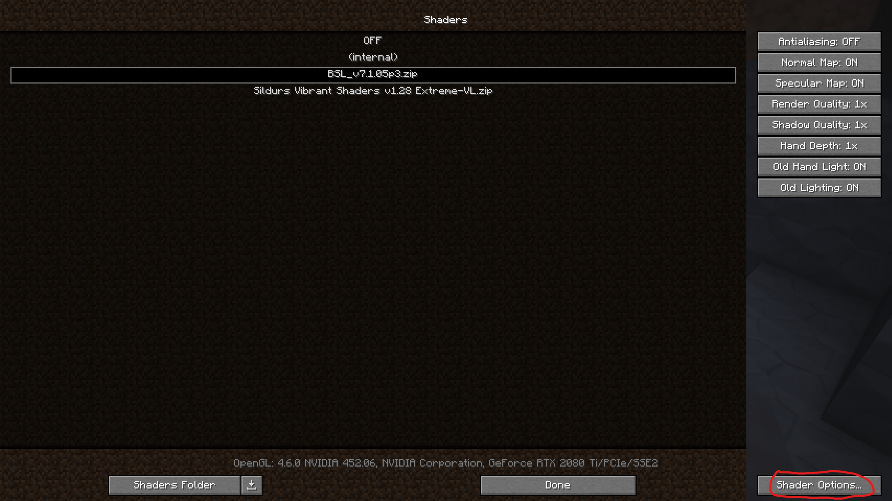

Some advice regarding installation and optimal settings for some shader packs
Install Guide
NOTE: This pack is designed to be used with shaders.
Install Optifine
Firstly you'll want to head to the Optifine website, go to downloads and grab the latest optifine version for the matching minecraft version you want to use, that this pack supports.
Install a Shader pack
Then you'll want to pick up a shader pack. Most shader packs that you enjoy will work (SEUS Renewed/PTGI, Sildurs etc...) but I recommend using a pack from this list that supports Emission, Material AO, POM and labPBR 1.3. My recommended pick is BSL Shaders, as this pack was developed using this as a baseline.
Download the pack, navigate to your .minecraft/shaderpacks

Then drop the .zip file you just downloaded into the folder

Install the Resource pack!
Finally head on over to the Downloads section and download my resources pack. Then head back into the .minecraft folder /resourcepacks

And drop the .zip file you downloaded into the folder

Recommended Settings
Access Shader Settings Here
BSL Shader Settings
Make sure in your visual settings to turn on Advanced Materials. Then in Advanced Materials Config change the Parallax Depth to 0.75. Personally I like to keep Self Shadows turned off and Rain Reflection turned on but you can decide on those for yourself.